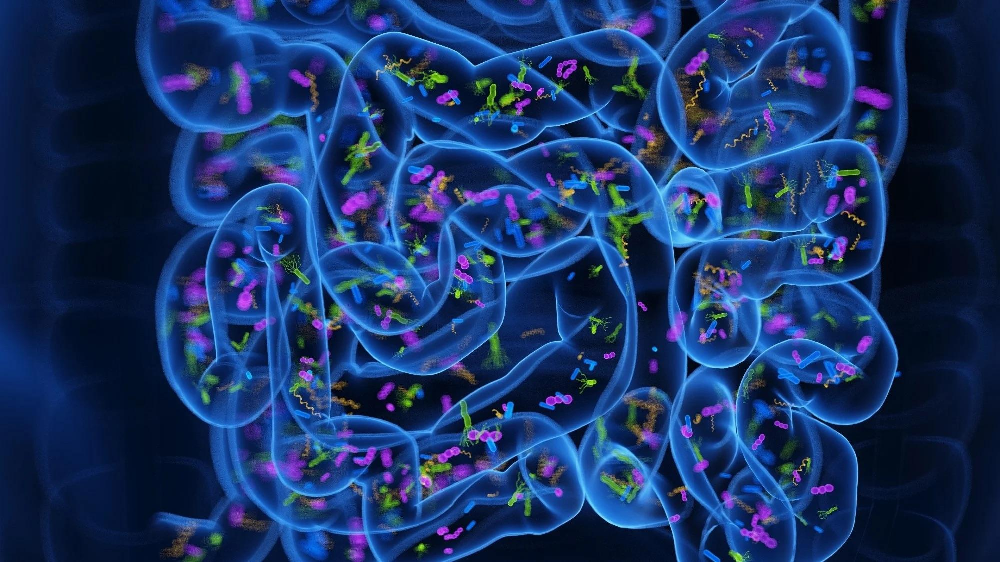
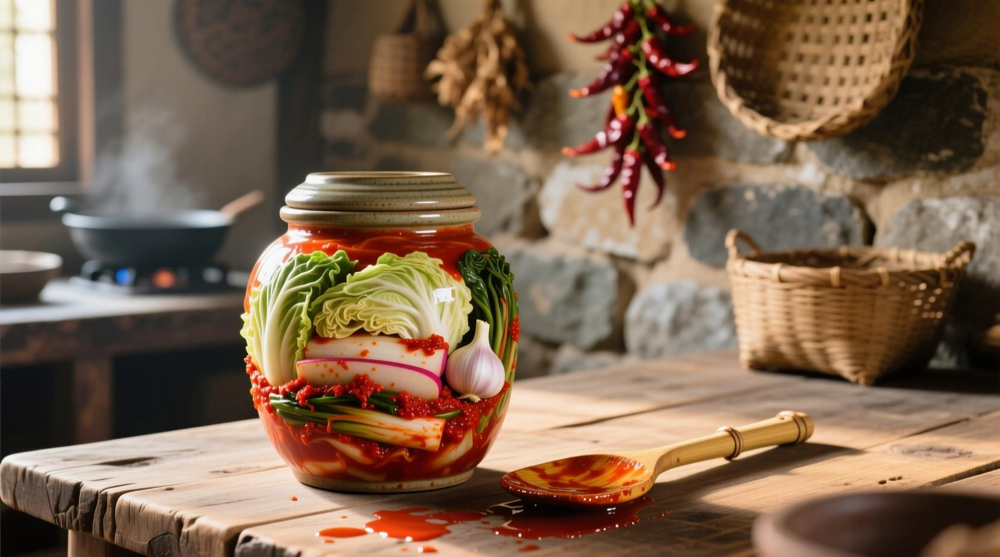
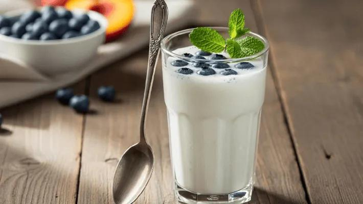
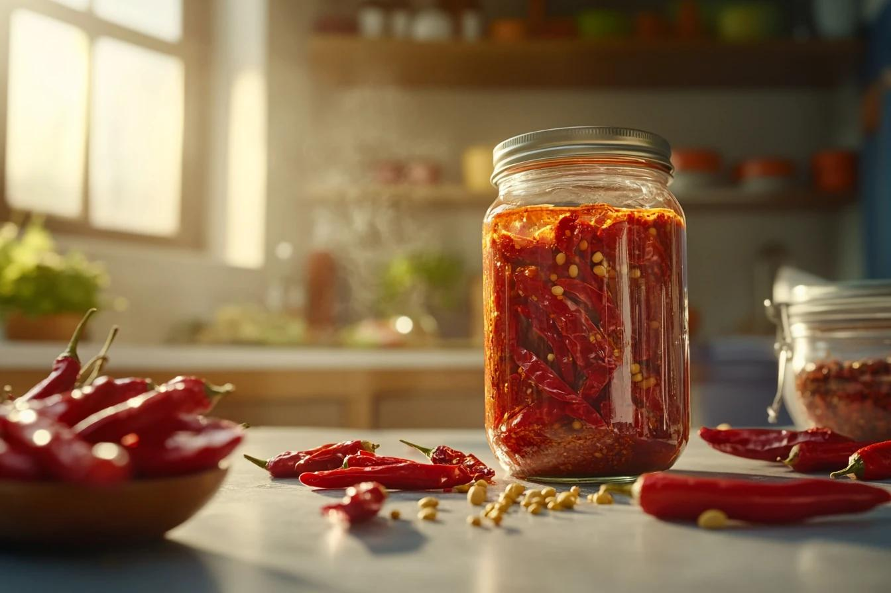
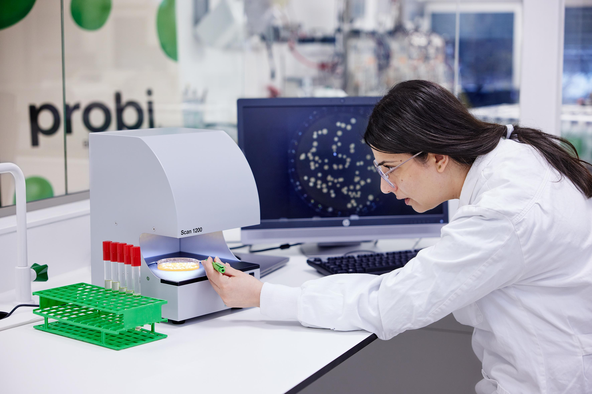

Explore our scientific writings, kitchen guides, lifestyle updates, and gut health digests written by clinical dieticians.

New clinical research suggests that introducing ambient, raw strains of Lactobacillus mesenteroides drops local colon inflammation levels, directly easing flatulence and gastric spasms. We break down the clinical markers and metabolic pathways.
Read Full Article →
Why the complex enzyme matrix in real kimchi outperform commercial probiotic capsules in bacterial colonization rates.

How bacterial gut secretions influence serotonin production cycles in the enteric nervous system to elevate mental clarity.

Debunking the myth: how slow-fermented organic chili sauces promote gastric blood flow and support digestive mucosa.
The gut-health conversations heating up across the wellness community right now.
Beyond live bacteria — scientists explore the metabolic byproducts of fermentation (postbiotics) and their surprising benefits on immune signaling pathways even after pasteurization.
fMRI imaging now links gut microbiome composition directly to anxiety regulation. New clinical data shows Lacto-enriched diets reduce cortisol markers by up to 28% over 8 weeks.
Consumers demand to know soil carbon ratings and water-use ratios of their vegetables. Regenerative farms producing cabbage and peppers now carry trackable batch-soil passports.
Monthly insights from the clinical experts guiding CULTURA's research standards and nutritional guidelines.
"Our metagenomic sequencing of CULTURA's kimchi revealed 14 distinct Lactobacillus strains — a diversity rarely found in commercial probiotics. This complexity correlates strongly with clinical efficacy in reducing systemic inflammation markers."
View Full Scientific Profile →
"Integrating 2 tablespoons of raw kimchi into the daily diet of my IBS patients over 6 weeks reduced bloating frequency by 40%. The fermented brine also appears to reduce gastric acidity without suppressing necessary digestive enzymes."
View Full Scientific Profile →Subscribe to our science digest and receive monthly peer-reviewed summaries, new recipes, and advisor updates in your inbox.